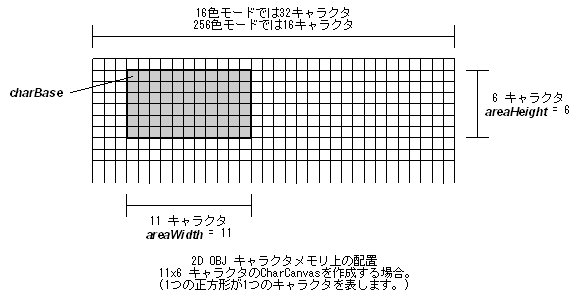

#include <nnsys/g2d/g2d_CharCanvas.h>
void NNS_G2dCharCanvasInitForOBJ2DRect(
NNSG2dCharCanvas* pCC,
void* charBase,
int areaWidth,
int areaHeight,
NNSG2dCharaColorMode colorMode
);
| pCC | [OUT] CharCanvas へのポインタ |
| charBase | [IN] CharCanvas に割り当てるキャラクタの始点へのポインタ。4バイトアライメントされていなければなりません。 |
| areaWidth | [IN] CharCanvas の水平方向キャラクタ数 |
| areaHeight | [IN] CharCanvas の垂直方向キャラクタ数 |
| colorMode | [IN] 対象 OBJ のカラーモード |
なし。
2次元マッピングOBJにおいてキャラクタメモリ上の矩形領域を CharCanvas として使うように初期化します。
ハードウェアの仕様上 areaWidth の最大値は 16色モードで 32キャラクタ(=256ピクセル)、
256色モードで 16キャラクタ(=128ピクセル)に制限されます。
また areaHeight の最大値はカラーモードによらず 32キャラクタ(=256ピクセル)となります。
colorMode には以下のいずれかの値を指定します。
| NNS_G2D_CHARA_COLORMODE_16 | 16色カラーのキャラクタを使用します。 |
| NNS_G2D_CHARA_COLORMODE_256 | 256色カラーのキャラクタを使用します。 |
この関数では charBase が指すキャラクタを基点として、
水平方向に areaWidth、
垂直方向に areaHeight のキャラクタを CharCanvas に割り当てます。

areaWidth と areaHeight
の組み合わせが OBJ のサイズにない場合、CharCanvas は複数の OBJ を使って表示する事になります。
これらの OBJ を適切に配置するには
NNS_G2dArrangeOBJ2DRect()
を用います。
また、表示に必要な OBJ の数は
NNS_G2dCalcRequiredOBJ2DRect()
で求める事ができます。
NNS_G2dArrangeOBJ2DRect,
NNS_G2dCalcRequiredOBJ2DRect
2007/01/11 第5引数の型が NNSG2dColorMode になっていたのを NNSG2dCharaColorMode に修正
2005/09/29 引数のIN/OUT表示を修正
2005/05/25 初版